सुविकल्प: Mine Repurposing Tool
Select factors and sub-factors to discover suitable repurposing options for your mining site
![Coal Controller Organisation emblem]()
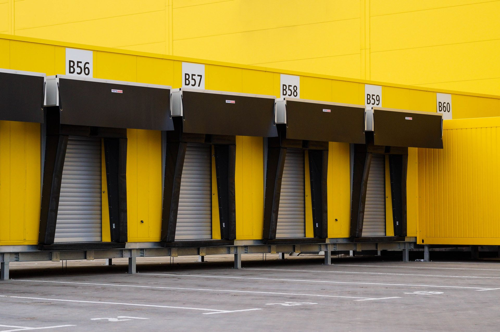
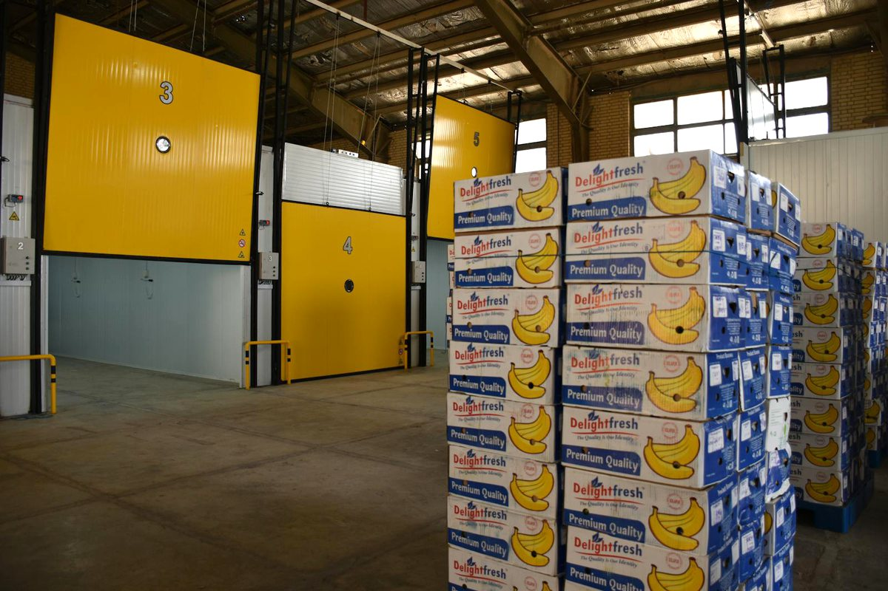
A Preservation Centre / Cold Chain Facility on closed coal mine land is a temperature-controlled storage, handling, processing, and distribution hub for perishable and temperature-sensitive products — fruits, vegetables, dairy, meat, fish, frozen food, medicines, vaccines, and pharmaceutical items.
This model converts under-utilised mine land or reusable mine infrastructure into a cold-chain and preservation hub that supports food security, post-harvest loss reduction, medical supply resilience, rural livelihoods, agri-business, and regional logistics. It is especially suitable where road connectivity, power, and proximity to farming areas or hospitals exist.
Post-mining site context, suitability criteria, scale matrix, and owner-side readiness needed before committing to a Preservation Centre project.
This concept proposes the development of a Preservation Centre / Cold Chain Preservation Facility on closed, reclaimed, or repurposed coal mine land as part of a sustainable mine-closure and post-mining land-use strategy.
A Preservation Centre, in this context, refers to a temperature-controlled storage, handling, processing, and distribution facility for preserving perishable and temperature-sensitive products such as:
The objective is to convert under-utilized mine land or suitable mine infrastructure into a cold-chain and preservation hub that supports food security, post-harvest loss reduction, medical supply resilience, rural livelihoods, agri-business, local employment, and regional logistics.
This model is particularly suitable for closed coal mine areas where the site has available land, road connectivity, proximity to farming areas, markets, hospitals, industrial areas, or logistics routes; existing power infrastructure; scope for solar integration; available buildings that can be adapted; and local workforce requiring post-mining livelihood opportunities.
A Preservation Centre is suitable for selected closed coal mine areas because cold-chain infrastructure can generate long-term livelihood, reduce waste, support farmers, improve medical supply reliability, and create a productive post-mining land-use model.
Key Benefits:
The National Centre for Cold Chain Development has issued engineering guidelines and minimum system standards for cold-chain components. For vaccines, standard refrigerated storage is maintained at +2°C to +8°C, and temperature monitoring is essential per WHO immunisation guidance.
The following matrix provides a structured checklist for assessing the suitability of the proposed site for the selected repurposing option. It identifies the key physical, technical, environmental, infrastructure, legal, and owner-side readiness parameters that should be reviewed before the project is advanced to the next stage of development. The purpose of this matrix is to help the project owner understand existing site conditions, technical requirements, potential constraints, and preparatory actions required before feasibility studies, approvals, or tendering are initiated.
| Category | What to Assess / Prepare | Why it Matters | Owner-Side Readiness |
|---|---|---|---|
| Land status | Closure status, land ownership, permissible post-mining use, lease restrictions | Legal viability of cold-chain development | Land and closure-status note |
| Mine safety | Subsidence risk, slope stability, dump stability, voids, abandoned structures, restricted zones | Ensures safe construction and operations | Mine safety zoning plan |
| Ground condition | Bearing capacity, settlement risk, ground improvement requirement | Cold stores require stable floors for racking, forklifts, insulated panels, and heavy loads | Geotechnical report |
| Site access | Road width, truck access, turning radius, loading bays, highway / mandi / hospital connectivity | Critical for inbound and outbound logistics | Access and mobility plan |
| Power availability | Grid supply, sanctioned load, transformer capacity, backup power, solar feasibility | Refrigeration systems require reliable power | Power availability report |
| Water availability | Cleaning, processing, sanitation, ice production, staff use, firefighting | Required for food hygiene and facility operations | Water source and quality plan |
| Drainage | Stormwater, wastewater, floor wash water, monsoon runoff, low-lying areas | Prevents contamination, flooding, and damage to cold rooms | Drainage and wastewater plan |
| Product catchment | Fruits, vegetables, dairy, fish, meat, poultry, pharma, vaccines, medical supplies | Determines chamber design and temperature zones | Demand and catchment study |
| Temperature zones | Chilled, frozen, deep frozen, controlled atmosphere, vaccine / pharma zones | Different products need different temperature and humidity ranges | Temperature zoning plan |
| Food safety | FSSAI registration / licence, hygiene zoning, pest control, cleaning protocols | Required for food storage and processing | Food safety compliance plan |
| Medical storage suitability | Vaccine / medicine storage needs, temperature monitoring, segregation, traceability | Required for medical and pharmaceutical preservation | Pharma / medical compliance note |
| Refrigeration system | Ammonia / CO₂ / HFC / low-GWP refrigerant, compressors, condensers, evaporators, controls | Core technical system for preservation | Refrigeration design brief |
| Insulation | PUF / PIR panels, vapour barrier, insulated flooring, doors, dock seals | Reduces energy loss and maintains temperature | Building envelope plan |
| Material handling | Palletization, forklifts, racking, conveyor, dock levellers, crates | Improves throughput and reduces damage | Material handling plan |
| Pre-cooling and pack house | Sorting, grading, washing, drying, pre-cooling, packing | Essential for fruits, vegetables, flowers, and perishables | Pack-house plan |
| Blast freezing / IQF | Rapid freezing of food products | Supports fish, meat, poultry, processed food, and export value chains | Freezing technology plan |
| Monitoring and automation | Temperature sensors, data loggers, SCADA, IoT, alarms, CCTV, access control | Ensures quality, traceability, and regulatory compliance | Digital monitoring plan |
| Fire and safety | Fire detection, emergency exits, ammonia safety, PPE, ventilation, emergency response | Protects workers, products, and assets | Fire and emergency plan |
| Energy efficiency | Solar rooftop, thermal storage, VFDs, efficient compressors, LED, insulation quality | Reduces operating cost and carbon footprint | Energy management plan |
| Community linkage | Farmers, FPOs, SHGs, hospitals, pharmacies, traders, processors, local youth | Ensures livelihood and utilization | Beneficiary mapping |
The following matrix presents an indicative relationship between available site area, project scale, technical configuration, and likely development potential. It is intended to support preliminary planning by helping the project owner identify the appropriate scale and configuration for the proposed repurposing option. The values and recommendations are indicative and should be refined through detailed feasibility studies, site surveys, engineering assessments, and relevant technical and commercial evaluations.
| Land Area | Recommended Scale | Configuration | Use Case |
|---|---|---|---|
| 0.5–2 ha | Pilot Cold Storage / Preservation Unit | 500–2,000 MT cold storage, small pack house, pre-cooling room, loading bay, basic backup power | Local farmer support, SHG / FPO linkage, pilot mine-repurposing model |
| 2–5 ha | Community Preservation Centre | 2,000–5,000 MT multi-commodity cold storage, pack house, grading line, reefer dock, small frozen chamber | Cluster-level food preservation and local market linkage |
| 5–15 ha | Integrated Cold Chain Hub | 5,000–15,000 MT storage, multi-temperature chambers, ripening chamber, blast freezer / IQF, pack house, reefer parking | District-level agri-logistics, dairy, fish, meat, and pharma support |
| 15–40 ha | Regional Preservation and Distribution Centre | 15,000–50,000 MT storage, controlled atmosphere storage, processing units, reefer fleet base, pharma/vaccine zone, testing lab | Regional cold-chain and food-processing hub |
| 40 ha+ | Large Multi-Product Preservation Park | Multi-user cold-chain park, food-processing units, warehousing, logistics, solar plant, training centre, quality lab, medical cold-chain zone | Just-transition flagship and regional agri-medical logistics hub |
For mine-closure repurposing, a 5–15 ha integrated cold-chain hub is often a practical starting scale. Smaller projects may begin with modular cold rooms and pack-house facilities, while larger projects can be developed in phases.
Implementation models, comparative assessment, and model-wise responsibility logic for mine-area Preservation Centre development.
The following table outlines the possible implementation models that may be considered for developing the proposed repurposing project. These models differ in terms of ownership structure, funding responsibility, private sector participation, operational control, and long-term risk allocation. The purpose of this table is to help the project owner compare broad development routes and select an implementation approach that aligns with its financial capacity, institutional preference, risk appetite, and long-term asset management objectives.
| Main Group | Model | Core Feature | Broad Suitability |
|---|---|---|---|
| Owner-Funded Infrastructure | EPC | Mine owner funds and procures cold storage buildings, insulated chambers, refrigeration system, pack house, loading bays, power backup, and basic utilities through a contractor. | Suitable for pilot or small preservation centres where the mine owner wants full control over infrastructure and future operations. |
| Owner-Controlled Operations | EPC + O&M / Facility Management | Mine owner develops the facility through EPC and appoints a professional cold-chain operator for refrigeration, food safety, inventory, loading, unloading, billing, maintenance, and customer service. | Highly suitable where owner control, local livelihood, food-safety compliance, and sustained technical operation are important. |
| Private-Financed Transfer | BOOT | Private developer finances, builds, owns, and operates the preservation centre for a defined concession period and transfers assets to the mine owner at the end. | Suitable for commercially viable cold-chain hubs with assured demand from farmers, traders, processors, hospitals, pharma distributors, or anchor tenants. |
| Private Commercial | BOO | Private developer builds, owns, and operates the cold-chain facility without mandatory transfer, subject to land-use rights and agreement terms. | Suitable for commercial cold-chain projects, but less preferred where mine-owner control and community benefit are central. |
| Structured PPP | DBFOT | Private concessionaire designs, builds, finances, operates, and transfers the cold-chain hub under a structured concession agreement. | Suitable for large integrated preservation centres requiring professional design, private finance, long-term operation, and performance obligations. |
| Land / Facility Concession | Concession / Lease-Develop-Operate | Mine owner retains land ownership and grants development and operation rights to a cold-chain operator, FPO federation, logistics company, cooperative, or SPV. | Very suitable for mine-closure repurposing because land is retained while operations, investment, and market linkage are professionally managed. |
| Multi-Stakeholder Partnership | Hybrid | Combines mine-owner land/building support, private cold-chain operator, FPOs, SHGs, CSR, government schemes, banks, hospitals, pharma distributors, and food processors. | Most suitable for balancing livelihood, food preservation, medical cold-chain needs, owner revenue, ESG value, and commercial sustainability. |
The following comparative assessment evaluates the major implementation models across key decision parameters such as investment requirement, ownership control, financing responsibility, contractual complexity, risk transfer, and long-term economic benefit. This matrix is intended to support early-stage decision-making by highlighting the relative strengths and limitations of each model. The final choice of model should be guided by the specific circumstances of the project, including its scale, commercial viability, applicable policy framework, and the owner's institutional preference.
| Evaluation Parameter | EPC | EPC+O&M | BOOT | BOO | DBFOT | Concession | Hybrid |
|---|---|---|---|---|---|---|---|
| Upfront investment by Mine Owner | High | High–Moderate | Low–Moderate | Low | Low–Moderate | Low–Moderate | Variable |
| Need for private financing | Low | Low | High | High | High | Moderate–High | Variable |
| Ownership retained by Mine Owner | Yes | Yes | Land retained; assets transferred later | Limited | Land generally retained | Land retained | Usually retained |
| Suitability for welfare objective | High | Very High | High if mandated | Moderate | High | Very High | Very High |
| Suitability for local livelihood | Moderate | Very High | High | Moderate | High–Very High | Very High | Very High |
| Suitability for food preservation | Moderate | High | High | High | Very High | Very High | Very High |
| Suitability for medical / pharma preservation | Low–Moderate | High if compliant | High if compliant | High if compliant | Very High if compliant | High–Very High | Very High if compliant |
| Suitability for FPO / SHG integration | Moderate | High | Moderate–High | Low–Moderate | High if mandated | Very High | Very High |
| Revenue potential | Moderate | Moderate–High | High | High | High | Moderate–High | Variable–High |
| O&M burden on owner | High | Moderate | Low | Low | Low | Low–Moderate | Shared |
| Commercial bankability | Low–Moderate | Moderate | High | High | High | Moderate–High | Variable |
| Risk to Mine Owner | High | Moderate | Low–Moderate | Low | Low–Moderate | Low–Moderate | Shared |
| Overall suitability for Preservation Centre | Moderate | Very High | High | Moderate | Very High | Very High | Very High / Most Suitable |
The following table explains how major project responsibilities are typically allocated under different implementation models. It covers key functional areas such as site availability, financing, design and construction, regulatory approvals, operation and maintenance, revenue collection, asset ownership, and end-of-term transfer. This helps clarify the respective roles of the project owner, private developer, EPC contractor, operator, or concessionaire, and supports the preparation of tender documents and contractual structures.
| Responsibility Area | EPC | EPC+O&M | BOOT | BOO | DBFOT | Concession | Hybrid |
|---|---|---|---|---|---|---|---|
| Site / land availability | Mine Owner | Mine Owner | Mine Owner / authority | Mine Owner / developer | Mine Owner / authority | Mine Owner / authority | Mine Owner / shared |
| Land ownership | Mine Owner | Mine Owner | Mine Owner retains land | As structured | Mine Owner retains land | Mine Owner retains land | Mine Owner generally retains |
| Geotechnical screening | Mine Owner / consultant | Mine Owner + O&M agency | Shared | Shared | Shared | Shared | Shared |
| Demand assessment | Mine Owner / consultant | Mine Owner + O&M agency | Developer | Developer | Concessionaire | Concessionaire / operator | Shared |
| Temperature-zone planning | Mine Owner / consultant | Mine Owner + O&M agency | Developer / refrigeration expert | Developer | Concessionaire | Operator / refrigeration expert | Shared |
| Building and insulation works | EPC contractor | EPC contractor | Developer | Developer | Concessionaire | Operator | Shared |
| Refrigeration system | EPC contractor / vendor | EPC contractor + O&M agency | Developer | Developer | Concessionaire | Operator | Shared |
| Pack house and grading line | EPC contractor | EPC contractor + O&M agency | Developer | Developer | Concessionaire | Operator | Shared |
| Power backup and solar | EPC contractor | EPC contractor + O&M agency | Developer | Developer | Concessionaire | Operator | Shared |
| Food safety compliance | Mine Owner | Mine Owner + O&M agency | Developer | Developer | Concessionaire | Operator | Shared |
| Temperature monitoring | Mine Owner | O&M agency | Developer | Developer | Concessionaire | Operator | Shared |
| Day-to-day operations | Mine Owner | O&M agency | Developer | Developer | Concessionaire | Operator | Operator / FPO / SPV |
| Community mobilization | Mine Owner | Mine Owner + O&M agency | Developer if mandated | Developer if mandated | Concessionaire if mandated | Operator + FPO / NGO | Core feature |
| Local employment | Mine Owner-controlled | Mine Owner-controlled through contract | Contract-based | Developer policy | Contract-based | Contract-based | Strongly configurable |
| FPO / SHG participation | Mine Owner-controlled | Mine Owner + O&M agency | Contract-based | Optional unless mandated | Contract-based | Strong contractual role | Core feature |
| Revenue collection | Mine Owner | Mine Owner / operator on behalf of owner | Developer during concession | Developer | Concessionaire | Operator / shared | Shared |
| O&M risk | Mine Owner | O&M agency, with owner oversight | Developer | Developer | Concessionaire | Operator | Shared |
| Asset transfer at end | No | No | Yes | No | Yes | As agreed | As agreed |
| Best suited role | Basic preservation facility creator | Owner-controlled cold-chain operator | Commercial developer-operator | Private cold-chain owner | Structured PPP concessionaire | Long-term preservation operator | Multi-party livelihood + commercial platform |
Funding logic, revenue generation, local livelihood potential, and combined comparison across all implementation models.
The following table presents the broad funding logic for each implementation model. It explains who is expected to finance the project, the level of owner-side funding requirement, and the commercial rationale behind each structure. This section is intended to help the project owner assess whether the project is more suitable for owner-funded development, private investment, public-private partnership, lease or concession structure, or a hybrid funding arrangement.
| Model | Funding Source | Owner Funding Requirement | Suitability |
|---|---|---|---|
| EPC | Mine owner budget / mine closure fund / CSR / food-processing infrastructure support | High | Suitable for basic cold storage, pack house, loading bay, power backup |
| EPC + O&M | Mine owner budget + O&M budget + storage charges + CSR | High to Moderate | Strong fit where owner wants control over livelihood, cold storage tariff, food safety, and operations |
| BOOT | Private cold-chain operator capital + bank finance + possible grant / subsidy / VGF | Low to Moderate | Suitable for commercially viable hubs with assured produce, market, or institutional demand |
| BOO | Private cold-chain company capital | Low | Suitable for private commercial cold storage; less preferred where community access is important |
| DBFOT | Private concessionaire + public / CSR support + possible VGF + institutional finance | Low to Moderate | Suitable for large integrated preservation centres with multi-temperature storage and processing units |
| Concession / Lease-Develop-Operate | Private operator / FPO federation / cooperative / logistics company / food processor / pharma distributor | Low to Moderate | Very suitable for mine-owned land where professional operation and market linkage are needed |
| Hybrid | Mine owner + CSR + government schemes + bank finance + FPO / SHG + private cold-chain operator + hospital / pharma anchor users | Variable | Most suitable for balancing livelihood, food preservation, medical supply support, owner revenue, and ESG outcomes |
The MoFPI Integrated Cold Chain and Value Addition Infrastructure scheme supports end-to-end cold-chain infrastructure from farm gate to consumer, including multi-temperature cold storage, CA storage, IQF, blast freezing, packing, reefer vans, and mobile cooling units.
The following table explains how revenue may be generated under different implementation models and identifies who is likely to receive the principal project income. It also describes the nature and extent of the financial benefit available to the project owner, whether through direct project revenue, cost savings, lease income, concession fees, revenue sharing, service charges, or eventual asset transfer. This comparison is intended to support the selection of a commercially appropriate model for the proposed repurposing project.
| Model | How Revenue is Generated | Who Receives Main Revenue | Owner's Financial Benefit |
|---|---|---|---|
| EPC | Storage charges, loading/unloading, sorting and grading fees, pack-house charges, freezing charges, ripening charges, reefer parking, medical cold-room rental, power/service charges | Mine Owner | Full revenue retained by owner, but owner bears full CAPEX, O&M, refrigeration risk, product-loss risk, and market risk |
| EPC + O&M | Same revenue streams: storage, handling, pack house, grading, freezing, blast freezing, IQF, medical cold-chain services, logistics support | Mine Owner after paying O&M agency | High benefit; owner retains revenue while outsourcing technical operations and maintenance |
| BOOT | Developer earns from cold storage rentals, processing charges, reefer services, pharma/medical cold-room leasing, pack-house operations, logistics, and user fees during concession | Developer / concessionaire during concession | Lease rent, concession fee, revenue share, local economic uplift, and asset transfer at end |
| BOO | Long-term revenue from commercial cold storage, frozen-food storage, medical cold-chain leasing, logistics, processing, and distribution services | Private developer | Limited direct benefit; typically lease rent, fixed charges, or premium payments |
| DBFOT | Structured revenue from multi-product storage, CA storage, frozen storage, processing, packing, reefer logistics, medical cold-chain services, and user charges | Concessionaire during concession | Concession fee, lease rent, revenue share, performance-linked payments, and transfer terms |
| Concession | Revenue from preservation operations, storage rental, pack house, grading, ripening, freezing, medical cold-chain leasing, logistics support, and user charges | Concessionaire / operator as per agreement | Lease rentals, revenue share, reduced O&M burden, improved land value, and socio-economic benefits |
| Hybrid | Mixed revenue: storage charges, farmer/FPO service charges, CSR/grants, medical cold-chain contracts, logistics, processing, solar power savings, training fees | Shared between owner, operator, FPO/SHG, cooperative, hospital/pharma partner, or SPV | Variable to high; owner benefits through revenue share, ESG gains, reduced O&M burden, and enhanced land value |
The following table assesses the likely local livelihood and employment potential of each implementation model. It considers the extent to which each model can support construction-phase jobs, long-term operational employment, local procurement opportunities, skill development, community participation, and associated support services. This section is particularly relevant where the repurposing project is expected to contribute to post-mining or post-operational economic transition and sustained local community benefit.
| Model | Local Job Potential | Why | Overall Suggestibility |
|---|---|---|---|
| EPC | Moderate | Creates short-term jobs in construction, insulation works, electrical installation, refrigeration installation, flooring, and site preparation. Long-term jobs depend on owner-led operations. | Moderate |
| EPC + O&M | High to Very High | Supports sustained employment in refrigeration operations, loading, unloading, sorting, grading, packing, inventory, security, cleaning, quality control, and facility management. | Very High |
| BOOT | High | Generates jobs during development and operation. Local employment can be strong if the agreement mandates local hiring, FPO/SHG participation, training, and local procurement. | High |
| BOO | Moderate | Can create cold-chain and logistics jobs, but local livelihood depends mainly on private developer policy unless contractually mandated. | Moderate |
| DBFOT | High to Very High | Suitable for large integrated hubs with cold storage, pack houses, frozen-food units, reefer logistics, processing, and medical cold-chain services. | High to Very High |
| Concession | Very High | Strong model for long-term local livelihood through FPO/SHG participation, farmer services, loading contracts, packing units, logistics, and facility operations. | Very High |
| Hybrid | Very High | Best suited for combining mine-owner support, private technical expertise, FPO/SHG participation, CSR, government schemes, hospitals, pharma users, and community benefit obligations. | Very High / Most Suitable |
The following combined comparison brings together three important dimensions of project structuring: revenue potential, owner-side financial benefit, and local livelihood generation. It provides a consolidated view of how each implementation model performs across commercial, institutional, and community-development perspectives. This matrix is intended to support balanced decision-making where the objective extends beyond financial return to include sustainable site reuse and long-term local economic benefit.
| Model | Main Revenue Source | Owner Profitability | Local Job Creation | Overall Comment |
|---|---|---|---|---|
| EPC | Storage, handling, pack house, grading, freezing, medical cold-room rental, utility charges | Moderate to High, but owner bears full CAPEX, O&M, refrigeration, product-loss, and market risk | Moderate | Useful for initial facility setup, but weak for long-term technical operations unless followed by structured O&M |
| EPC + O&M | Storage rentals, handling charges, pack-house fees, freezing fees, pharma/medical storage, logistics services | High, as owner retains revenue after O&M payments | High to Very High | Strong where owner wants control, welfare impact, and sustained employment |
| BOOT | Commercial cold storage, processing, packing, logistics, pharma/medical cold-chain services | Moderate through concession fee, lease rent, revenue share, and eventual asset transfer | High | Suitable for commercial preservation hub with mandatory livelihood and service obligations |
| BOO | Long-term private revenue from storage, frozen food, medical cold-chain leasing, logistics, processing | Low to Moderate, mostly from lease rent, fixed charges, or premium | Moderate | Use cautiously where community benefit and owner control are not primary |
| DBFOT | Multi-temperature storage, CA storage, IQF, blast freezing, logistics, pharma/medical cold-chain, processing | Moderate to High through concession fee, lease rent, revenue share, and transfer terms | High to Very High | Good for large structured PPP projects needing private finance and professional operation |
| Concession | Storage, pack house, farmer services, reefer logistics, medical cold-chain leasing, processing, user charges | Moderate to High through lease rent, concession fee, revenue share, and improved land value | Very High | Very suitable for community-linked preservation centre with livelihood obligations |
| Hybrid | Mixed revenue from storage, processing, logistics, medical cold-chain contracts, grants, CSR, FPO services, training | Variable to High depending on revenue-sharing and support structure | Very High | Most suitable for balancing mine closure, livelihood, food preservation, medical supply support, and commercial viability |
Pre-RFP readiness checklist, post-award scope, and the 15-step implementation pathway for mine-area Preservation Centre development.
The following section identifies the key owner-side preparatory actions that should ideally be completed before issuing the first Request for Proposal. These actions are aimed at reducing uncertainty for prospective bidders, improving project bankability, clarifying site availability, identifying approval pathways and risks, and defining the technical and commercial scope of the project. Completing these preparatory steps before tendering can improve bid quality, attract credible responses, and reduce the risk of delays during project implementation.
Before issuing an RFP for a Preservation Centre / Cold Chain-based mine repurposing project, the mine owner should prepare the following in priority order:
The following section lists the principal activities that may be undertaken by the selected contractor, developer, concessionaire, operator, or implementation agency after award of the project. These activities generally include detailed site investigations, engineering design, statutory submissions and approvals, equipment procurement, construction, commissioning, operational planning, staff training, and performance monitoring. The distinction between pre-RFP owner preparedness and post-award implementation responsibilities helps ensure an appropriate and efficient allocation of effort across the project development cycle.
After award, the selected concessionaire / contractor / O&M agency / cold-chain operator can take up the following activities in chronological order:
The following implementation pathway presents a practical high-level sequence for advancing the proposed repurposing concept from initial approval through to project execution and long-term operation. It outlines the broad stages of concept approval, preliminary studies, model selection, bid preparation, procurement, detailed design, statutory approvals, construction, commissioning, and ongoing operation. This pathway is indicative and should be adapted to reflect the specific complexity, regulatory requirements, financing structure, and site conditions applicable to the project.
Way forward, preferred models, positioning strategy, references, and abbreviations for mine-area Preservation Centre development.
The following way forward summarizes the preferred development approach for the proposed repurposing option, based on the assessment presented in PRISM (Post Mining Repurposing Implementation and Strategy Models). It identifies the most suitable implementation models in order of preference, highlights key technical and due-diligence considerations, and outlines the recommended next steps and broad development logic. This section is intended to guide internal decision-making and support the project owner in progressing from concept-stage evaluation toward feasibility assessment, project structuring, regulatory approvals, and implementation planning.
Preferred Models, in order: (1) Hybrid Model, (2) Concession / Lease-Develop-Operate, (3) EPC + O&M / Facility Management
Why preferred: Hybrid is preferred because cold-chain projects need public livelihood benefit, farmer linkage, refrigeration technology and professional warehouse operation. The hybrid mix should include mine-owner land + FPO / farmer linkage + private cold-chain operator + government / CSR support.
Secondary option: DBFOT is suitable for large regional cold-chain hubs with private finance, advanced refrigeration and multi-temperature storage.
Suggestable technical care: Power reliability, refrigeration load, insulation, backup power, food safety, docking, inventory system, temperature monitoring, fire safety and demand mapping must be ensured.
Recommended development logic: Start with pre-cooling, pack house, cold rooms and farmer service centre. Scale into controlled atmosphere, frozen storage, blast freezing, reefer loading and medical cold-chain only where demand exists.
Disclaimer — All repurposing interventions proposed under P.R.I.S.M. shall remain subject to applicable mining laws, land-use regulations, environmental approvals, mine-closure conditions, forest and biodiversity regulations, groundwater permissions, and any other statutory approvals as may be applicable. Land ownership is proposed to remain with the mine owner / competent authority unless otherwise permitted under applicable law.
| Abbreviation | Full Form |
|---|---|
| EPC | Engineering, Procurement and Construction |
| O&M | Operation and Maintenance |
| FM | Facility Management |
| BOOT | Build, Own, Operate, Transfer |
| BOO | Build, Own, Operate |
| DBFOT | Design, Build, Finance, Operate, Transfer |
| PPP | Public-Private Partnership |
| CSR | Corporate Social Responsibility |
| RFP | Request for Proposal |
| DPR | Detailed Project Report |
| CAPEX | Capital Expenditure |
| ESG | Environmental, Social and Governance |
| FPO | Farmer Producer Organization |
| SHG | Self-Help Group |
| SPV | Special Purpose Vehicle |
| VGF | Viability Gap Funding |
| FSSAI | Food Safety and Standards Authority of India |
| NCCD | National Centre for Cold Chain Development |
| MT | Metric Tonne |
| IQF | Individual Quick Freezing |
| CA | Controlled Atmosphere |
| PUF | Polyurethane Foam |
| PIR | Polyisocyanurate |
| HVAC | Heating, Ventilation and Air Conditioning |
| VFD | Variable Frequency Drive |
| IoT | Internet of Things |
| SCADA | Supervisory Control and Data Acquisition |
| UPS | Uninterruptible Power Supply |
| DG | Diesel Generator |
| PPE | Personal Protective Equipment |
| SOP | Standard Operating Procedure |
| WHO | World Health Organization |
| NABARD | National Bank for Agriculture and Rural Development |
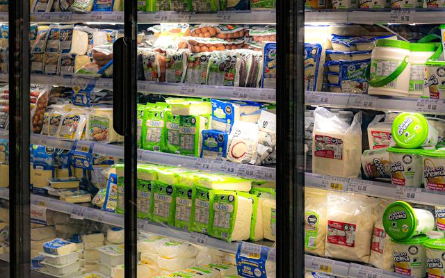
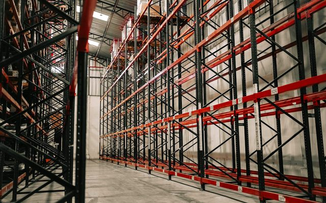
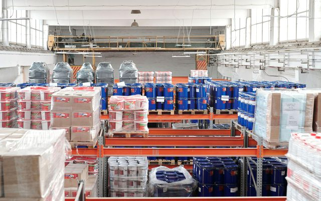
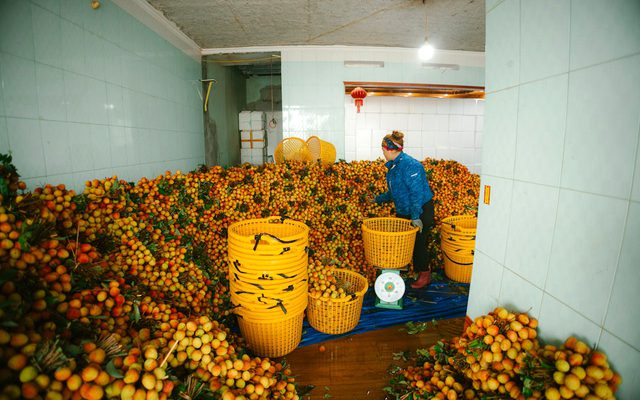
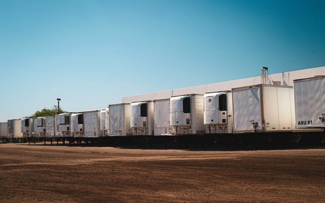
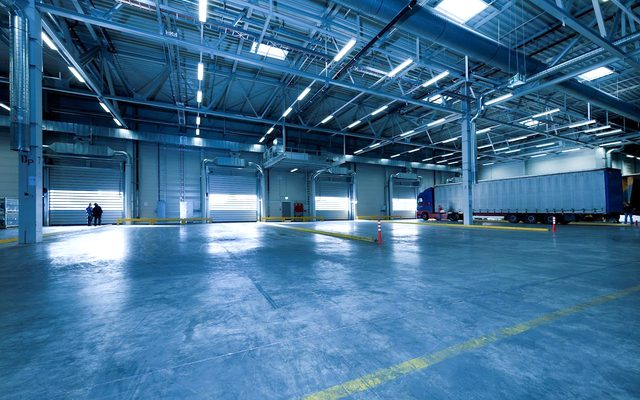
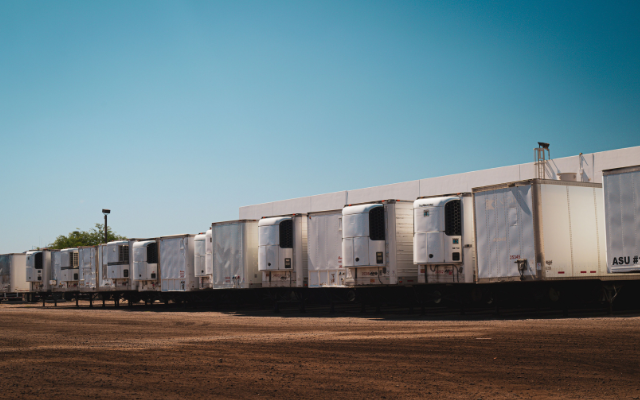
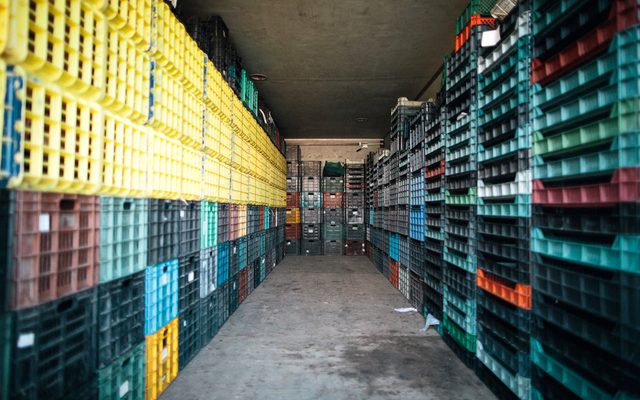
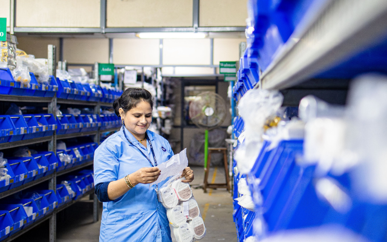
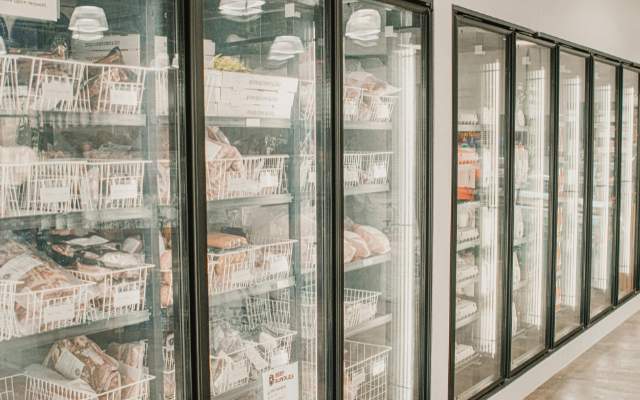
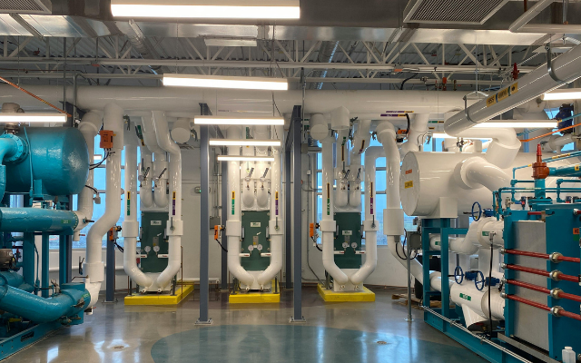
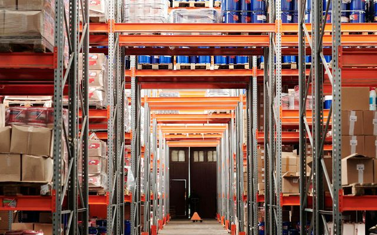
Links open external websites. Coal Controller Organisation does not endorse third-party content.


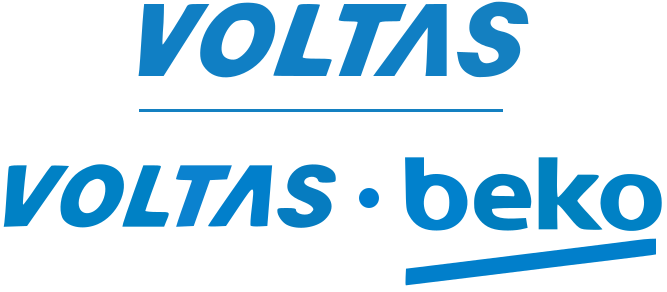


Disclaimer: Inclusion of an agency on this list does not constitute endorsement, empanelment, or recommendation by the Coal Controller Organisation or the Ministry of Coal, Government of India. Mine owners and project proponents are advised to conduct their own due diligence process before engaging any agency.
Disclaimer: Inclusion of an expert does not constitute endorsement, empanelment, or recommendation by the Coal Controller Organisation or the Ministry of Coal, Government of India. Users are advised to independently verify credentials and suitability before engaging any individual.